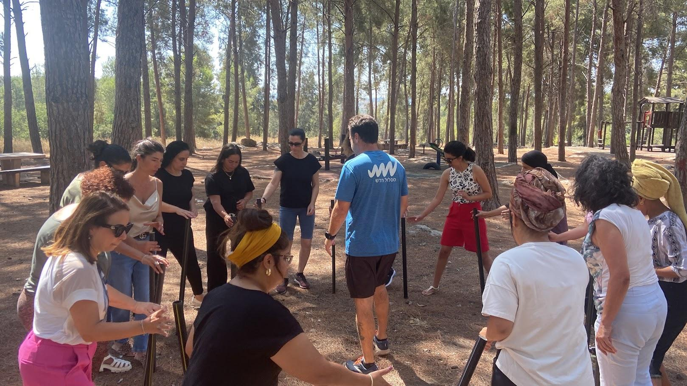
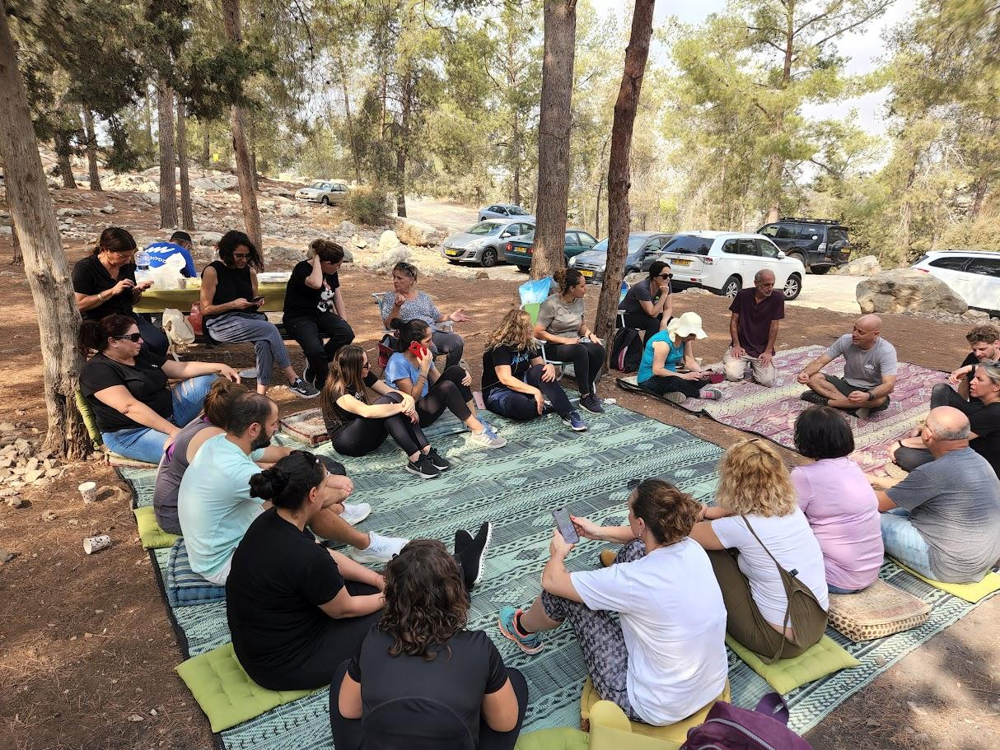
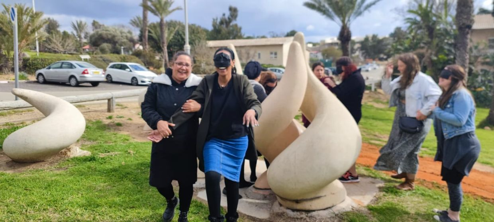
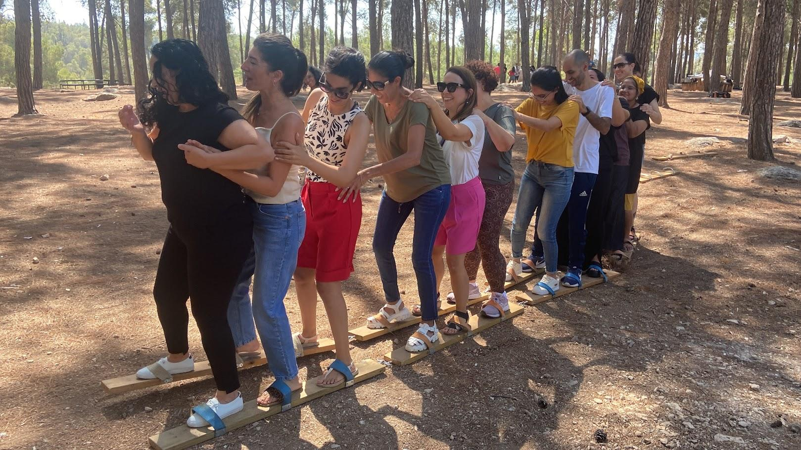
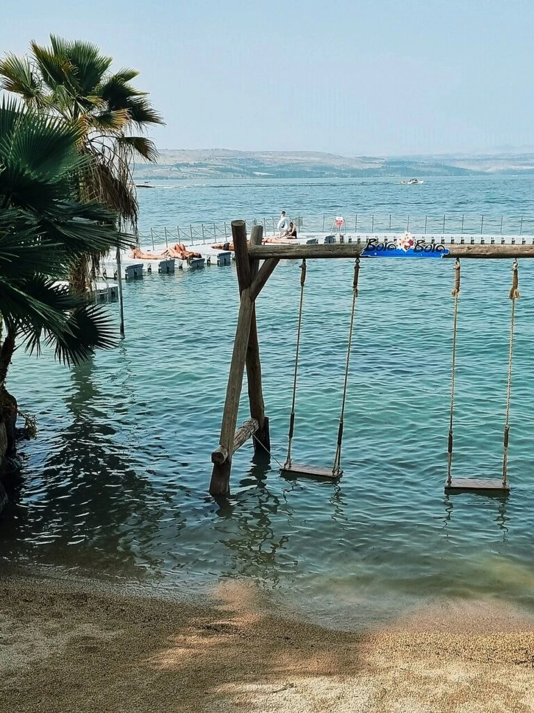

תוכניות לארגונים ← סדנאות O.D.T לצוותים
סדנת גיבוש לעובדים ולארגונים ←בונים צוות, צומחים יחד
סדנת שטח קבוצתית ואתגרית לארגונים, למחלקות ולצוותי עבודה: משימות, אתגרים ומעגלי שיחה שמחברים, מחדשים ומצמיחים את הצוות. מחוץ למקום העבודה, בטבע או באולם, לפי בחירתכם.



הגיע הזמן לעצור ולחשב מסלול (מ)חדש
בעולם דינמי, חדשני ומאתגר, שחיקת העובדים והצוותים וחוסר תשומת לב לסביבה של העבודה הקשה והמורכבת הם אתגר משמעותי.
העומס והלחצים היומיומיים מקשים על יצירת סביבת עבודה מגובשת וכיפית, שמובילה לתהליכי למידה משמעותיים ולתחושת שייכות וסיפוק.
הידעת?
מחקרים מראים כי צוותי עבודה מגובשים מובילים להישגים גבוהים יותר, לתפוקה גבוהה יותר ולתחושת שייכות חזקה יותר לארגון.

יום שנשאר עם הצוות גם אחרי שחוזרים למשרד
אנחנו מזמינים אתכם לסדנת גיבוש חווייתית מחוץ למקום העבודה, בטבע או באולם ממוזג לבחירתכם.
יותר מסתם יום כיף
סדנה שהיא תהליך מובנה, עם משימות חשיבה יצירתיות, אישיות וקבוצתיות.
יום כיף עם תחושת סיפוק והנעה
מאפשר להגביר תחושת סיפוק ושייכות לארגון באמצעות יציאה ממסגרת העבודה.
מטרות ארגוניות
חיזוק תקשורת ושיתוף פעולה
בניית תקשורת יעילה בין חברי הצוות, הסרת חסמים היררכיים ועידוד שיחה גלויה וכנה.
שיפור הדינמיקה הקבוצתית
בניית יכולת עבודה משותפת, הבנת החוזקות של כל אחד ולמידה להסתמך זה על זה.
הגברת הפרודוקטיביות
צוות מגובש עובד ביעילות רבה יותר, פותר בעיות מהר יותר ומשיג יעדים אפקטיבית.
תרבות ארגונית חיובית
חיזוק הזהות הארגונית, העברת ערכים ויצירת תחושת שייכות ואחדות.
מטרות אישיות וחברתיות
בניית אמון
יצירת קשרים אישיים עמוקים, היכרות מעבר לתפקיד המקצועי והבנה הדדית טובה יותר.
הפגת מתחים
הורדת רמות הלחץ, שחרור מהשגרה היומיומית וטיפול בקונפליקטים בצורה בונה.
שילוב עובדים חדשים
עזרה לחברי צוות חדשים להשתלב ולהרגיש חלק מהצוות.
פיתוח מיומנויות חברתיות
למידת כישורי מנהיגות, פתרון בעיות יצירתי וחשיבה מחוץ לקופסה.
הגברת מוטיבציה
חידוש האנרגיה וההתלהבות, הרגשת הערכה מצד הארגון והגברת המחויבות.
הכרות בין מחלקות
שבירת מחסומים ויצירת קשרים בין אנשים שלא עובדים ביחד באופן שוטף.
בוחרים את המקום שמתאים לצוות
משטח מקום העבודה ועד הטבע: כל מיקום נבנה עם משימות אתגריות, תוכן ומעגלי שיחה.
בשטח מקום העבודה
פעילות במתחם המוכר, בסביבה נוחה ונגישה.
פארק או יער סמוך
פעילות בטבע שמספקת שינוי אווירה ומרחב פתוח.
״רגע של נחת״ מול הנוף
מתחמי אירוח בטבע, מהכנרת ועד חוף הים.
״רגע של נחת״: סדנה במקום שעוצר את הנשימה
- אופי הפעילות: פעילות קבוצתית חווייתית במתחמי אירוח בטבע שמושלמים לסדנאות: על שפת הכנרת, בחוף הים, ביער או בפארק, עם נוף שמזמין לעצור ולנשום.
- למי מתאים: לכל גיל, ללא מגבלות בריאותיות, ובלי צורך בידע קודם.
- משך הפעילות: כ־4 שעות, בבוקר או בצהריים, בכל עונות השנה.

צוות שחי קבוצות, שטח ואנשים
צוות מנחים מנוסה
למנחים שלנו ניסיון רב בהנחיית קבוצות וצוותי עבודה בפרט, עם הבנה עמוקה של אתגרי עבודת צוות.
התאמה אישית
כל סדנה מותאמת באופן מדויק לארגון, לדרישות ולמטרות הייחודיות שלו.
יצירתיות וחדשנות
אנחנו תמיד מחפשים דרכים חדשות ומרעננות להפתיע ולרגש, כדי ליצור חוויה ייחודית שתיזכר.
אנחנו דואגים להכול, אתם מביאים את הצוות
מספר המשתתפים הסופי נקבע שבוע לפני מועד הפעילות.
יום מלא
משך הסדנה: 10:00–16:00.
מפתח הדרכה
מדריך לכל 20 משתתפים בקבוצה, להבטחת חוויה אישית ואיכותית.
אירוח
ארוחות בוקר וצהריים, חדר אירוח והתכנסות ופינת קפה ושתייה קלה.
ביטוח ובטיחות
ביטוח מקצועי של העמותה, לשקט נפשי מלא. ספק מורשה של משרד הביטחון.
מתאימים לארגון שלכם?
ספרו לנו על הקבוצה, ונבנה יחד את התוכנית הנכונה. נחזור אליכם תוך יום עבודה.
- רולי חדש054-4221337
- רונן054-4225112
- מיילnewmaslul@gmail.com
- כתובתפנינה 8, גדרה